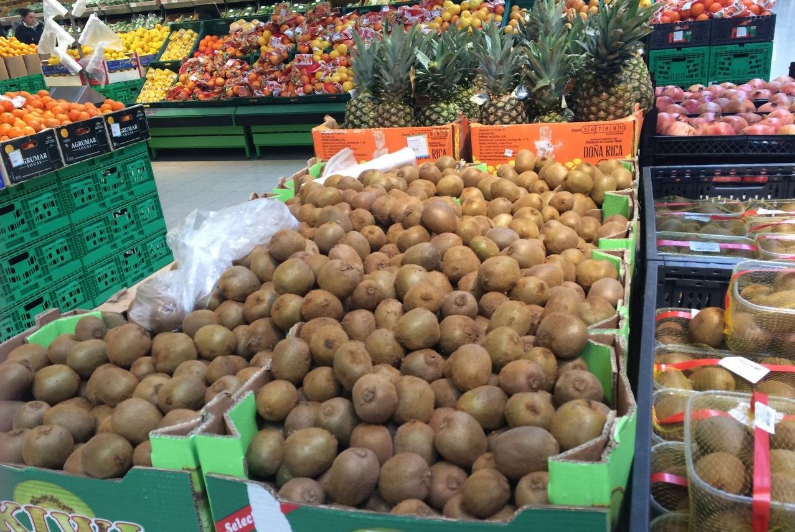

Mercado Central de Frutas y Hortalizas
Trasladado a Mercabarna el 9 de agosto de 1971, fue el primer mercado que se estableció en la Unidad Alimentaria, proveniente del emblemático recinto del Born de Barcelona.Es el mercado que ocupa una mayor extensión (más de 170.000 m2 distribuidos en 7 naves) y el que genera mayor movimiento comercial y humano. Operan unas 180 empresas, en 440 puntos de venta. Comercializa más de 1 millón de toneladas de productos al año, que llegan y se distribuyen por todo el mundo. Desde 1989, el Mercado Central de Frutas y Hortalizas funciona en horario diurno, a diferencia de la mayoría de mercados mayoristas del mundo, que siguen siendo de madrugada. Si está interesado en pedir frutas y verduras frescas, complete el formulario a continuación.
Orden